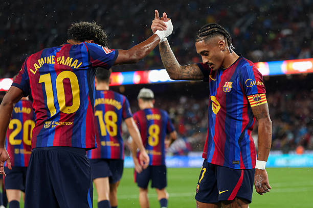

SUDOR Y GLORIA

Lágrimas de Paco Gento tras la goleada del Barça
Fútbol
NBA
Tenis
Motorsport
Opinión
Lo último
Lágrimas de Paco Gento tras la goleada del Barça
El balón de oro ya está aquí: el Barça gana con comodidad al Athletic Club
El Barça inicia la liga con goleada
Fernando Alonso puntúa de nuevo en Zandvoort
El Racing de Santander puntúa en liga 14 años después
El Atlético Fuencarral: La cárcel del talento
Fernando Alonso y Ferrari: La depresión del Cavallino Rampante
Tributo al Málaga: desaparición, esplendor, caída a los infiernos y resurgimiento
Oscar Piastri pega un golpe sobre la mesa en Zandvoort